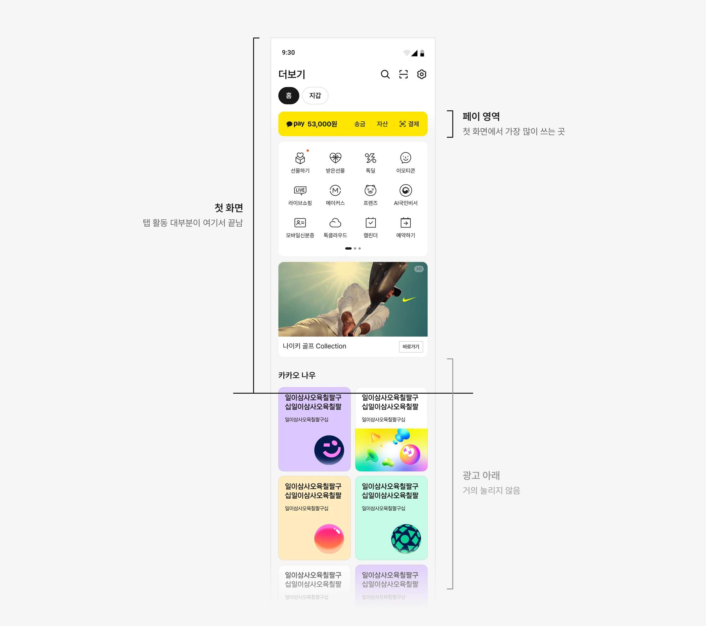
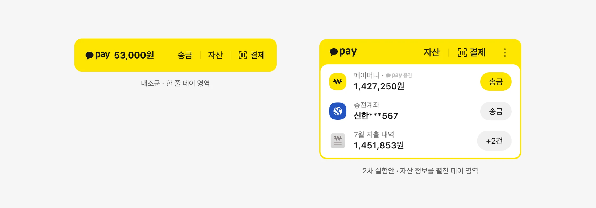
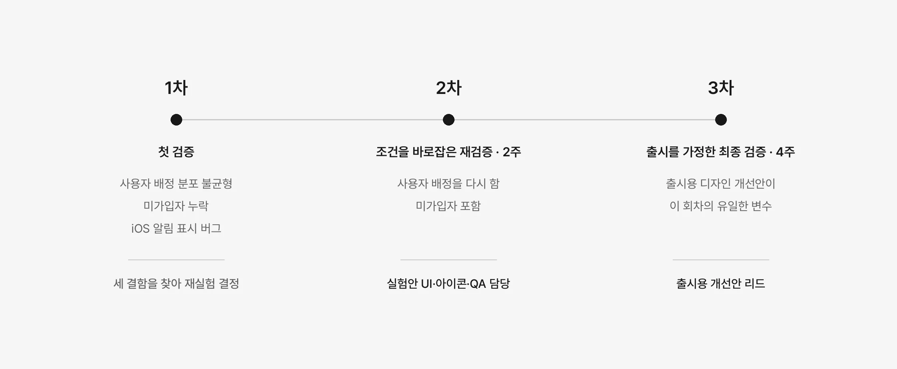
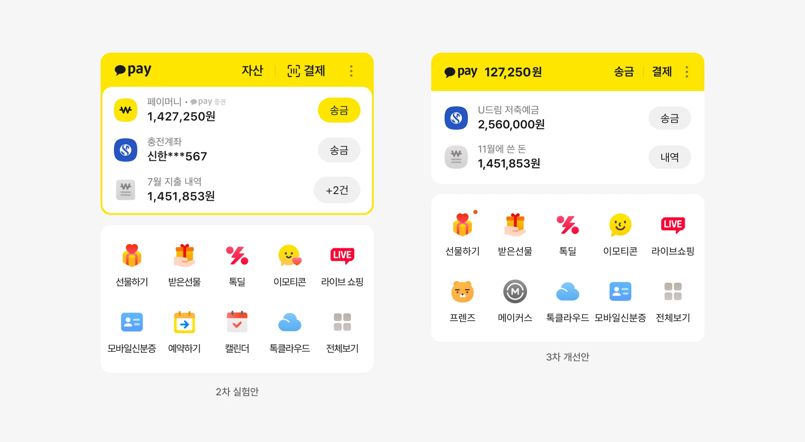
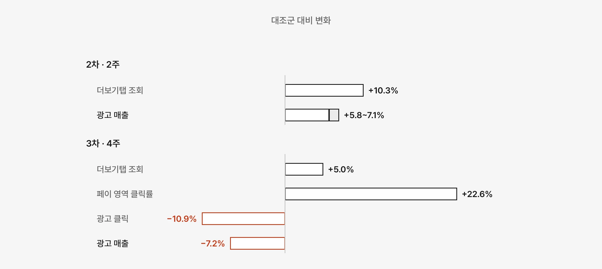
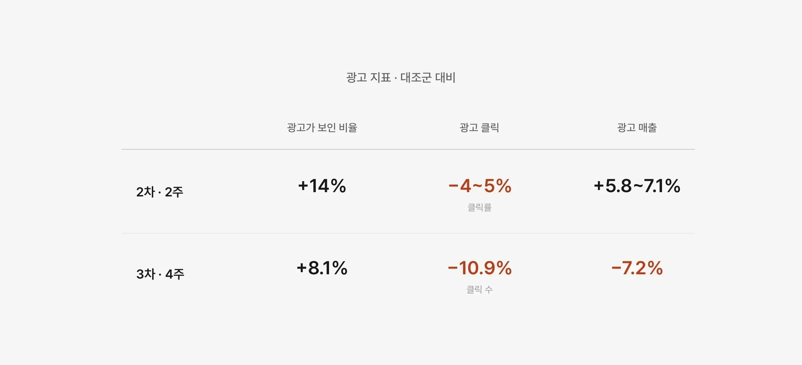

페이 영역 트래픽 부스팅 실험
더보기탭 첫 화면의 페이 영역을 키우면 탐색과 광고 매출이 함께 늘어날지 세 차례 검증했습니다. 탐색은 매번 늘었지만 광고 매출은 한 번 오르고 한 번 떨어졌습니다. 출시하지 않고, 탐색 영역만 따로 검증하는 다음 실험으로 판단을 옮겼습니다.

출발점
탭 활동은 대부분 첫 화면에서 끝났습니다
더보기탭 사용자의 활동은 대부분 첫 화면 위쪽에서 끝났고, 광고 아래 영역은 거의 눌리지 않았습니다. 첫 화면에서 가장 많이 쓰이는 곳은 페이 영역이었습니다. 가장 많이 쓰는 영역부터 다시 설계하기로 했습니다.

가설
페이 자산 정보를 펼치면 탭을 더 볼 것이라고 봤습니다
한 줄이던 페이 영역에 자산 정보를 펼쳐 보여주면 더보기탭 조회가 늘고, 늘어난 조회가 광고 매출로 이어질 것이라고 봤습니다.
페이 영역이 커지는 만큼 서비스 바로가기는 줄어듭니다. 그래도 선물하기 전체 거래액은 지켜야 한다는 가드레일을 실험 전에 정했습니다.

실험 설계
같은 가설을 조건을 바꿔 세 번 검증했습니다
1차에서는 사용자 배정이 고르지 않았고, 미가입자가 빠졌고, iOS 알림 표시에 버그가 있었습니다. 세 결함을 찾아 재실험을 결정했습니다.
2차는 배정을 다시 하고 미가입자를 포함한 재검증이었고, 실험안 UI와 아이콘, 디자인 QA를 맡았습니다. 3차는 출시를 가정한 최종 검증으로, 출시용으로 다듬은 디자인 개선안이 이 회차의 유일한 변수였습니다.


디자인
페이 영역을 키우고 바로가기를 한 화면에 모았습니다
2차 실험안은 페이 영역에 페이머니, 충전계좌, 이번 달 지출 내역을 펼쳐 보여줬습니다. 서비스 바로가기는 5열 2행으로 줄이고, 나머지는 전체보기로 모았습니다.

디자인 세부
3차에서는 출시를 전제로 페이 영역을 다시 다듬었습니다
잔액을 노란 머리 줄로 올려 송금, 결제와 한 줄에 두고, 펼친 자산 정보는 세 줄에서 두 줄로 줄였습니다. 페이 영역을 감싸던 노란 테두리를 없애 아래의 바로가기, 광고와 같은 카드 형식으로 맞췄습니다.

결과
탐색은 두 번 모두 늘었지만 광고 매출은 엇갈렸습니다
더보기탭 조회는 두 회차 모두 늘었고, 선물하기 전체 거래액도 지켰습니다. 그런데 광고 매출은 2차에서 오르고 3차에서 떨어졌습니다.

해석
3차에서는 광고가 더 많이 보였지만 덜 눌렸습니다
3차에서도 광고가 화면에 보인 비율은 대조군보다 8.1% 높았습니다. 줄어든 것은 노출이 아니라 클릭 효율이었고, 광고 클릭이 10.9% 줄면서 매출이 7.2% 떨어졌습니다.
2차에서도 광고 클릭률은 4~5% 낮았습니다. 다만 광고가 보인 비율이 14% 늘어 클릭률 하락을 상쇄했고, 매출이 올랐습니다. 3차에서는 노출 증가 폭이 줄고 클릭 감소 폭이 커지면서 방향이 뒤집혔습니다.
3차의 유일한 변수였던 디자인 개선안은 페이 영역 클릭률을 22.6% 끌어올렸습니다. 첫 화면의 시선이 페이 영역에 더 머물면서 광고 주목도가 낮아진 것으로 추정했고, 2차와 달리 탭 알림 점으로 들어온 사용자가 광고 클릭으로 이어지지 않은 점도 함께 봤습니다.
회차 간 조건 차이도 남아 있었습니다. 2차는 11월에 2주, 3차는 연말연시를 포함해 4주 동안 진행했고, 2차 수치는 전체 적용을 가정한 환산치, 3차는 인당 기준입니다. 어느 하나를 원인으로 확정할 수 없었기 때문에, 한 번의 상승만으로 출시를 판단할 수 없는 지면이라고 결론 내렸습니다.

판단
세 번 실험했지만 출시하지 않았습니다
결과가 반복되지 않아 데이터 분석 결과와 함께 상위 리뷰를 거쳤고, 사업 조직과의 합의에 따라 적용을 보류했습니다. 이 화면을 전제로 준비하던 다른 화면의 동선 변경, 새 아이콘 세트, 연결된 화면의 기준도 함께 되돌렸습니다.
보류를 기다리는 대신 페이 영역과 무관하게 탐색 영역만 검증하는 실험을 따로 제안했습니다. 이어진 과정은 리스트형 탐색 강화 실험에 정리했습니다.
역할
리드한 것
- 2차 실험안 UI·아이콘·디자인 QA
- 3차 출시용 디자인 개선안
- 디자인 시스템 영향 관리
- 보류 이후 탐색 실험 제안
함께 한 것
- 버킷·지표 설계 — PM, 데이터 분석가
- 광고 영향 분석 — 광고 분석 조직
- 적용 판단 — PO, 사업 조직